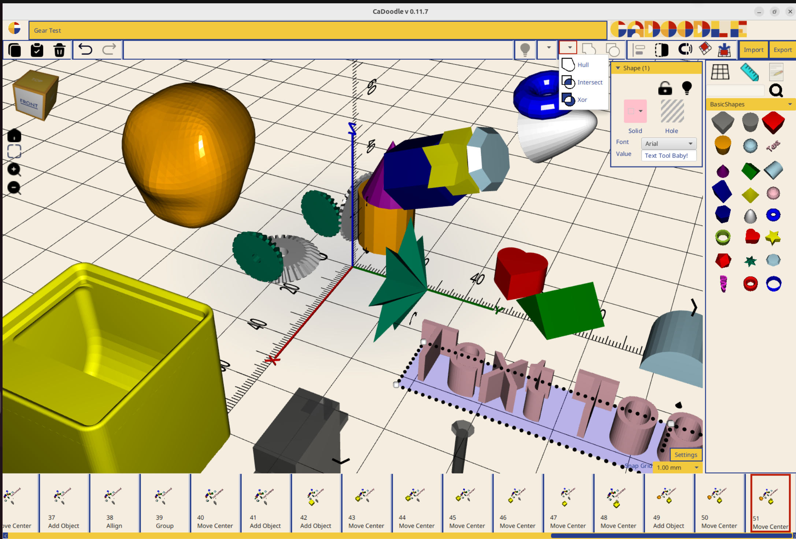

About CaDoodle
What is CaDoodle?
CaDoodle is a local drag-and-drop CAD application for Linux, Windows, Mac and ChromeOS. Users models are stored on their own computer, and the application runs without an internet connection.
Inspiration
CaDoodle is inspired by TinkerCAD. The workflow of TinkerCAD is an excellent experience for novice users of CAD:
- Drag and drop shape
- Group and ungroup
- Solid and Hole status
- Undo of operations
- Stretch and move handles
- Library of examples
- Nearest Surface snapping
However, this workflow suffers from a few fundamental problems:
- Web based UI means it is enclosed by whomever runs the server
- Subscription model is precarious (Autodesk is not known as a reliable partner for free tools over time)
- Proprietary source files limit sharing, collaboration, and reproducability
Solution
This application is Java based and uses BowerStudio as the CAD kernel.
All scripts will be compatible BowlerStudio scripts.
UI will be laid out in SceneBuilder / JavaFX.
OpenJDK 17
Hardware Requirements
- 4 GB of RAM is required
The following platforms will be targeted:
- Windows
- Mac OS (ARM)
- Linux Ubuntu (.deb and AppImage)
- ChromeOS
The following platforms will not be targeted:
- Android
- iOS
Chrome OS Instructions
Linux is off by default. You can turn it on any time from Settings.
-
On your Chromebook, at the bottom right, select the time.
-
Select Settings and then About ChromeOS and then Developers.
-
Next to "Linux development environment," select Set up.
-
Follow the on-screen instructions. Setup can take 10 minutes or more.
-
A terminal window opens. You have a Debian environment. You can run Linux commands, install more tools using the APT package manager, and customize your shell.
-
Finally, double-click on the .deb to install CaDoodle.
-
You can now launch CaDoodle from the applications launcher window.
-
(If possible on your hardware) Enable GPU acceleration via these instructions: (Source: https://www.aboutchromebooks.com/chrome-flags-crostini-gpu-support/ )
Enabling GPU acceleration for Linux applications on Chrome OS significantly enhances performance for demanding tasks such as gaming, 3D modeling, and hardware-accelerated video rendering.
This guide provides a complete step-by-step approach to activating the chrome://flags/#crostini-gpu-support flag, helping your Linux environment utilize GPU resources efficiently. What Is chrome://flags/#crostini-gpu-support?
Crostini is Chrome OS’s built-in feature that lets users run Linux applications inside a secure container using select Chrome Flags.
By default, these applications rely on CPU-based rendering. However, when GPU acceleration is enabled via the Crostini GPU Support flag, it offloads rendering to your Chromebook’s GPU, improving performance, responsiveness, and battery efficiency during intensive tasks. Prerequisites
Before enabling GPU support for Linux apps, confirm that your system meets the following criteria:
Chrome OS Version: Your Chromebook must run Chrome OS 76 or newer.
Crostini Enabled: Linux (Beta) must be turned on in system settings.
Hardware Support: Your Chromebook must support GPU virtualization.
Steps to Enable Crostini GPU Support 1. Access Chrome Flags
Open the Chrome browser.
Type chrome://flags in the address bar and hit Enter.
-
Locate the Crostini GPU Support Flag
In the flags search bar, type: Crostini GPU Support
Or go directly to: chrome://flags/#crostini-gpu-support
-
Enable the Flag
Next to the Crostini GPU Support flag, click the dropdown and select Enabled.
-
Restart Your Chromebook
A prompt will appear at the bottom of the browser.
Click Restart to apply the changes.
Steps to Enable Crostini GPU Support Verifying GPU Acceleration in Linux
To confirm that GPU acceleration is enabled:
Open the Linux Terminal.
Run the following commands:
sudo apt-get update
sudo apt-get install mesa-utils
glxinfo -B
- Check for the line:
OpenGL renderer string: Mesa DRI…
If the GPU is being utilized, your actual GPU name will appear instead of “llvmpipe.”
Additional Developer Flags You Might Find Useful 1. chrome://flags/#enable-force-dark
Enable dark mode for all web content, even if a site doesn’t support it. Especially useful for developers testing UI accessibility under dark environments.
Use case: Enables CSS overrides to simulate a dark theme sitewide. 2. chrome://flags/#allow-insecure-localhost
Allows Chrome to load insecure content (HTTP) from localhost during development without blocking or warning. Ideal for testing local APIs or self-signed HTTPS certificates.
Use case: Running local development environments without needing valid SSL certificates. 3. chrome://flags/#ash-debug-shortcuts
Activates developer keyboard shortcuts in Chrome OS. Great for debugging UI components, window managers, or testing multiple screen setups in dev environments.
Use case: Chrome OS app development and layout testing on Chrome devices. 4. chrome://flags/#enable-command-line-on-non-rooted-devices
This flag enables command-line access on non-rooted Android devices, facilitating debugging for mobile web developers using remote debugging or ADB.
Use case: Simulating mobile interactions and terminal access in development workflows.
History
As an elementary school technology teacher, TinkerCAD provided easy to use on-ramps for students as young as 2nd grade. I spent the 23/24 school year teaching with TinkerCAD and found myself increasingly upset by the limitations and constraints of TinkerCAD. First and foremost, the fact of the CAD models sources being entirely unavailable. The "Tinkercad source" is actually entries in the Autodesk servers database. With no option to access those actual sources, students are tied entirely to the tinkercad website.
The first real problem came when a student made a model in 5th grade that was so complex that the Tinkercad site crashed. The model was not recoverable, and the student that had done all of that extra work to add detail to his model lost everything. This experience started me thinking about how this could be made better for the students.
The next major problem came when another student wanted to do CAD work on her ride home (which due to bus schedules took over an hour each day). She wanted to keep designing things, but without an internet connection she was unable to do any work.
Finally i began to contemplate the pedagogical damage being done by teaching students a skill that is only accessible to them as mediated by a company. I began to feel a deep sense of unease that the skills of my students were increasingly being trapped behind a paywall.
My solution was to make a locally installed application, that used an open file format that is stored locally on the disk, and that had access to the full resources of the computer the application was running on.
In July 2024 I began work in earnest on CaDoodle.
In April 2025 I hit a level of feature completeness to open it up for Beta testing.
